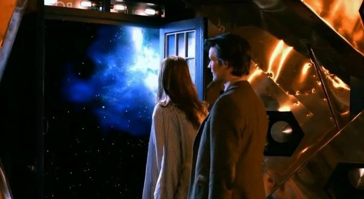

BaibaKo или Original [ENG]
c русскими субтитрами
Приквел к серии 2. Зверь внизу | Приквел к серии 6. Вампиры Венеции |
 | |
Meanwhile in the TARDIS
мини-эпизоды (приквелы) к 5 сезону
8 ноября 2010
Формат: 2 эпизода по 4 мин.
| Варианты озвучек: | * DVO BaibaKo |
|---|---|
| Скачивание и просмотр: |
Два мини-эпизода с Одиннадцатым Доктором и Эми Понд, выпущенные в DVD и Blu-ray изданиях 5 сезона «Доктора Кто».Обе сцены были написаны Стивеном Моффатом. Первая следует сразу же за «Одиннадцатым часом» и происходит перед «Зверем внизу», а вторая сюжетно происходит между «Плотью и камнем» и «Вампирами Венеции».

